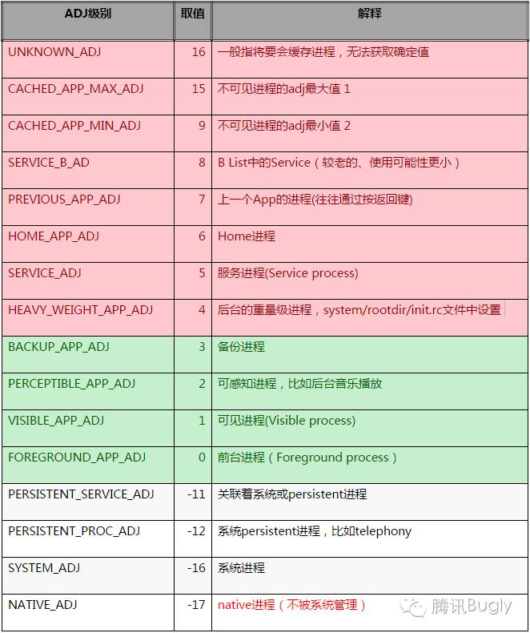

一、进程的优先级
Android系统将应用进程分为五级。必要时，按照从低到高顺序进行回收。
- （最高）前台进程——Foreground process
用户当前操作所必需的进程。通常在任意给定时间前台进程都为数不多。只有在内存不足以支持它们同时继续运行这一万不得已的情况下，系统才会终止它们。
- 正在交互的Activity，已调用onResume()
- 拥有某个 Service，后者绑定到用户正在交互的 Activity
- 拥有正在“前台”运行的 Service（服务已调用 startForeground()）
- 拥有正执行一个生命周期回调的 Service（onCreate()、onStart()或 onDestroy()）
- 拥有正执行其 onReceive() 方法的 BroadcastReceiver
- （高）可见进程——Visible process
没有任何前台组件、但仍会影响用户在屏幕上所见内容的进程。可见进程被视为是极其重要的进程，除非为了维持所有前台进程同时运行而必须终止，否则系统不会终止这些进程。
- 拥有不在前台、但仍对用户可见的 Activity（已调用 onPause()）
- 拥有绑定到可见（或前台）Activity 的 Service
- （中）服务进程——Service process
尽管服务进程与用户所见内容没有直接关联，但是它们通常在执行一些用户关心的操作（例如，在后台播放音乐或从网络下载数据）。因此，除非内存不足以维持所有前台进程和可见进程同时运行，否则系统会让服务进程保持运行状态。
- 正在运行 startService() 方法启动的服务，且不属于上述两个更高类别进程的进程。
- （低）后台进程——Background process
后台进程对用户体验没有直接影响，系统可能随时终止它们，以回收内存供前台进程、可见进程或服务进程使用。 通常会有很多后台进程在运行，因此它们会保存在 LRU 列表中，以确保包含用户最近查看的Activity的进程最后一个被终止。
- 对用户不可见的 Activity 的进程（已调用 Activity的onStop() 方法）
- （最低）空进程——Empty process 保留这种进程的的唯一目的是用作缓存，以缩短下次在其中运行组件所需的启动时间。
二、进程回收策略
Android 中对于内存的回收，主要依靠 Lowmemorykiller 来完成，是一种根据 OOM_ADJ 阈值级别触发相应力度的内存回收的机制。 
三、免死牌
3.1 原理
想要不被系统杀死，就要告诉系统我很重要，即提高自己的进程优先级。
Magic Locker中LockService在OnStartCommand中通过startForeground方法向系统发送一个Notification，将自身的Service优先级从4提升到2，大大降低了被杀死的概率。
@Override
public int onStartCommand(Intent intent, int flags, int startId) {
HSLog.d("onStartCommand(), intent = " + intent);
boolean shutDownLock = UserSettings.getShutDown();
if (!setForeground) {
// 关键，发送foreground通知，第一个参数为通知id
startForeground(LockNotificationMgr.NOTIFICATION_ID_FOREGROUND, LockNotificationMgr.getInstance().getForegroundNotification());
// 启动LockServicePhantom
startService(new Intent(this, LockServicePhantom.class));
setForeground = true;
}
boolean bootCompleted = false;
if (intent != null) {
bootCompleted = intent.getBooleanExtra(BootReceiver.EXTRA_BOOT_COMPLETED, false);
}
if (bootCompleted) {
UserSettings.setShutDown(false);
shutDownLock = false;
}
HSLog.i("shut down == " + shutDownLock);
if (shutDownLock && !locked) {
FloatWindowController.getInstance().showLockScreen();
locked = true;
}
return START_STICKY;
}
既然发了通知，那么就能在系统通知栏上看见。为了不让用户感知，使用了一种hack的方法。上面代码中可以看到，我们启动了名字为LockServicePhantom的Service。
public class LockServicePhantom extends Service {
@Override
public IBinder onBind(Intent intent) {
return null;
}
public int onStartCommand(Intent intent, int flags, int startId) {
Notification localNotification = LockNotificationMgr.getInstance().getForegroundNotification();
// 发送一个相同id的通知，顶掉LockService发的
startForeground(LockNotificationMgr.NOTIFICATION_ID_FOREGROUND, localNotification);
try {
// 隐藏通知，参数为bool removeNotification.
stopForeground(true);
stopSelf();
} catch (Exception exception) {
}
return START_NOT_STICKY;
}
}
这个类就是来隐藏通知的，它startForeground之后立马stopForeground。 stopForeground的时候告诉系统，我不要前台优先级了，顺便把我的前台通知移除吧！然后系统就移除了。
3.2 隐藏通知在7.1.1以后失效
为何失效了，因为大家都用上面的方案提升自己的进程优先级，所以谷爹修复了这个bug。
见 android-25 源码里services/core/java/com/android/server/am/ActiveServices.java，这是系统移除前台通知的地方。
// 下面代码里的英文注释，一读就明白谷爹做了啥。
private void cancelForegroudNotificationLocked(ServiceRecord r) {
if (r.foregroundId != 0) {
// First check to see if this app has any other active foreground services
// with the same notification ID. If so, we shouldn't actually cancel it,
// because that would wipe away the notification that still needs to be shown
// due the other service.
ServiceMap sm = getServiceMap(r.userId);
if (sm != null) {
for (int i = sm.mServicesByName.size()-1; i >= 0; i--) {
ServiceRecord other = sm.mServicesByName.valueAt(i);
if (other != r && other.foregroundId == r.foregroundId
&& other.packageName.equals(r.packageName)) {
// Found one! Abort the cancel.😈😈🤑🤑🙄🙄
return;
}
}
}
r.cancelNotification();
}
}
四、春哥药
在我们使用了上面的方案免死以后，被系统回收的概率已经很低了。但是面对市面上各种系统级或是第三方的清理软件，它们可不管什么进程优先级，不在自己白名单里的全部杀死，“非我族类，其心必异”。经过调查，这些清理（电池管理）软件，大多数都是通过forceStop手段去杀死进程。要么是通过AccessibilityService提供的模拟点击app管理里force stop按钮来实现，要么是通过am force-stop pkgName命令来做。
凑巧的是，我们不经意间发现了一个结论：在Magic Locker获得Notification Access权限以后，被forceStop以后会立马重新启动。即Notification Access权限的赋予就是那剂春哥药。
为了研究明白原因，我查阅了很多相关资料，只有论Android应用进程长存的可行性这篇提到了这个很bug的事情。这篇文章的作者说他很想以后单开一篇把原理写一下，然而他太监了。
无奈，只能Read the Fucking Source Code。
4.1 溯源
首先我们发现，和forceStop相关的实现在ActivityManagerService（AMS）内部，和NotificationListenerService相关的管理在NotificationManagerService（NMS）。
AMS是一个2w多行的复杂类，好在我们只需要关心forceStop相关的逻辑。NMS则只有2k多行。
4.2 寻迹
既然我们确定AMS中forceStop会和NMS的某种机制相关联，那么这两个系统Service肯定有通信。 即肯定是Broadcast方式或者getSystemService方式两种之一，搜索的范围大大缩小。
4.2.1 AMS.forceStopPackageLocked
private void forceStopPackageLocked(final String packageName, int uid, String reason) {
forceStopPackageLocked(packageName, UserHandle.getAppId(uid), false,
false, true, false, false, UserHandle.getUserId(uid), reason);
Intent intent = new Intent(Intent.ACTION_PACKAGE_RESTARTED,
Uri.fromParts("package", packageName, null));
//系统启动完毕后,则mProcessesReady=true
if (!mProcessesReady) {
intent.addFlags(Intent.FLAG_RECEIVER_REGISTERED_ONLY
| Intent.FLAG_RECEIVER_FOREGROUND);
}
intent.putExtra(Intent.EXTRA_UID, uid);
intent.putExtra(Intent.EXTRA_USER_HANDLE, UserHandle.getUserId(uid));
//发送广播ACTION_PACKAGE_RESTARTED用于停止alarm和清除通知
broadcastIntentLocked(null, null, intent,
null, null, 0, null, null, null, AppOpsManager.OP_NONE,
null, false, false, MY_PID, Process.SYSTEM_UID, UserHandle.getUserId(uid));
}
4.2.2 NMS.Constuctor
IntentFilter pkgFilter = new IntentFilter();
pkgFilter.addAction(Intent.ACTION_PACKAGE_ADDED);
pkgFilter.addAction(Intent.ACTION_PACKAGE_REMOVED);
pkgFilter.addAction(Intent.ACTION_PACKAGE_CHANGED);
pkgFilter.addAction(Intent.ACTION_PACKAGE_RESTARTED);
pkgFilter.addAction(Intent.ACTION_QUERY_PACKAGE_RESTART);
pkgFilter.addDataScheme("package");
mContext.registerReceiver(mIntentReceiver, pkgFilter);
通过上面的观察可以看出，AMS.forceStopPackageLocked发送了Intent.ACTION_PACKAGE_RESTARTED, NMS在构造函数里监听了Intent.ACTION_PACKAGE_RESTARTED。
4.3 释因
可以假设这么一个场景：写AMS.forceStopPackageLocked的程序员接到了一个需求，即当app被forceStop以后需要清除该app的所有通知；他在NMS里看到，ACTION_PACKAGE_RESTARTED广播收到后做了清除通知的动作，所以就发送了这个Broadcast。
有趣的是，NMS在接到ACTION_PACKAGE_RESTARTED之后，还做了别的事情。
private BroadcastReceiver mIntentReceiver = new BroadcastReceiver() {
@Override
public void onReceive(Context context, Intent intent) {
// 省略。。。
if (action.equals(Intent.ACTION_PACKAGE_ADDED)
|| (queryRemove=action.equals(Intent.ACTION_PACKAGE_REMOVED))
|| action.equals(Intent.ACTION_PACKAGE_RESTARTED)
|| (packageChanged=action.equals(Intent.ACTION_PACKAGE_CHANGED))
|| (queryRestart=action.equals(Intent.ACTION_QUERY_PACKAGE_RESTART))
|| action.equals(Intent.ACTION_EXTERNAL_APPLICATIONS_UNAVAILABLE)) {
// 下面一大段获取intent相关pkgList
String pkgList[] = null;
……………………
……………………
// pkgList是否涉及到打开了Notification Access权限的app
boolean anyListenersInvolved = false;
if (pkgList != null && (pkgList.length > 0)) {
for (String pkgName : pkgList) {
if (cancelNotifications) {
// 清除Notification
cancelAllNotificationsInt(pkgName, 0, 0, !queryRestart,
UserHandle.USER_ALL);
}
if (mEnabledListenerPackageNames.contains(pkgName)) {
anyListenersInvolved = true;
}
}
}
if (anyListenersInvolved) {
// if we're not replacing a package, clean up orphaned bits
if (!queryReplace) {
disableNonexistentListeners();
}
// make sure we're still bound to any of our
// listeners who may have just upgraded
// 确保那些注册了listener的Service活着，导致死掉的app重启
rebindListenerServices();
}
}
// 省略。。。
// 。。。
}
};
写这个BroadcastReceiver的程序猿考虑的很全面，他在收到广播时重新确保了拥有Notification Access权限App的Service连接，即调用了rebindListenerService方法。
但他应该没想到，在forceStop之后也会走这儿的逻辑导致程序重新启动，即应用被forceStop后马上拉活。
4.4 预言
既然这是个bug，则可以被修复。
可能在不久的将来，谷歌单独加了某名叫Intent.ACTION_PACKAGE_FORCE_STOPPED的广播，AMS和PMS通过该广播通讯，则rebindListenerServices将不被调用，利用Notification Access权限复活的方案随之失效。